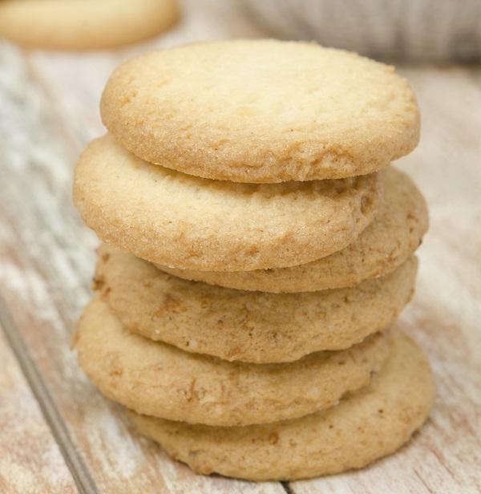

Galletas de limón

Las galletas de limón son una receta clásica de la repostería casera. Su textura suave y su agradable aroma las convierten en una excelente alternativa para cualquier ocasión. Gracias a la ralladura y al jugo de limón, estas galletas poseen un sabor fresco y un aroma inconfundible. Además, son muy fáciles de preparar y no requieren demasiados ingredientes.